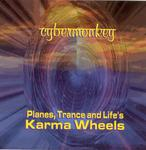

| Artist: | Cybermonkey |
| Title: | Planes, Trances And Life S Karma Wheels |
| Label: | self produced |
| Length(s): | 59 minutes |
| Year(s) of release: | 2003 |
| Month of review: | [01/2005] |
| 1) | Gdansk | 15.46 |
| 2) | Shakyamuni | 7.12 |
| 3) | Invocation | 7.13 |
| 4) | Caravan To Dharmasala | 13.22 |
| 5) | Border Highway | 8.09 |
| 6) | Into The Ether | 7.39 |
Shakyamuni opens with marimba styled playing. The spoken words are by Lisa Turner, who has a good reciting voice. The spoken words give the music and band a New Age feel. The marimba and percussion dominate this more up-beat tune. The music does continue to be background music though, easy and pleasant to follow when you pay attention, easy to ignore when you are doing other things. Later on we come to a Tangerine Dream oriented part, so in which the electronic influences come out more.
Invocation continues the medatitive side of the music with Eastern/Indian wailings and sparse sounds. Later the music turns for the darker, and it becomes even more subdued and sparse. The Indian wail is something that has been used by too many artists and has become something of a mark of commerciality. Fortunately, Cybermonkey does not use it much.
With Caravan To Dharmasala we come to the second long track, this time with more voicings and vocalizations. In view of the title it is not strange that a kind of Northafrican mood is evoked. Plenty of percussives here. Later on the music becomes more jam like, more percussive even, although Cybermonkey never seems to want to impose itself. Border Highway is of a kind, except a bit more positive sounding. The percussives are again veyr prominent, while the vocals are more up-beat. They carry the melody, for the main part. This is also the track that features the mandolin, which is used to good effect and brings in some variety. The guitars are also audible in the back, but on the whole I have heard surprisingly little of them so far.
Into The Ether is the closer. This is a more introspective track again with pan flutish sounds, a bit of a lament. The song has a bit of a David Sylvian feel at times. The marimba of Shakyamuni sets in half way.